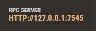
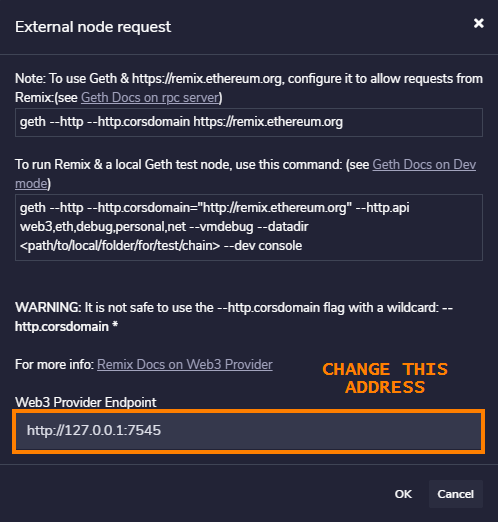

Connect Ganache to Remix
1. First we need to Install Genache
Ganache is a local Ethereum blockchain which which we can use with remix.ethereum.org
◇ Linux: Genache command line
root@kali:/# sudo apt install nodejs
root@kali:/# sudo apt install npm #package manager
root@kali:/# sudo npm install -g ganache-cli
◇ Windows: Genache GUI
Select a release on https://github.com/trufflesuite/ganache/releases and download the setup .exe
2. Start Ganache
◇ Linux
root@kali:/# ganache-cli
◇ Windows

3. To connect Genache to remix.ethereum.org
Take note of the listening locahost port
◇ Linux

◇ On Windows

On Remix on the Deploy tab as “ENVIRONMENT” instead of the usual JavaScript VM which works completely on the browser use “Web3 provider”

4. We can note that the test addresses on Remix are the same of Genache
5. When we deploy a contract we can check that a new block/transaction is done.
Block 0 is the creation of the network, while Block 1 is block related to the new transaction(contract deployed)
◇ Linux

◇ Windows